Contributors: Dr. Ahmad Mustafa, Dr. Motaz Alfarraj, Dr. Ashraf Alattar, Dr. Chen Zhou
Teaching Assistants with remarkable contributions include: Kuo-Wei Lai, Wuyang Du, Shiva Mahato, Michael Zhou, Ninghan Zhong
Disclaimer: All content of these notes are part of this course at Georgia Tech. Any re-use or distribution is not permitted without pre-approved permission. All these notes belong to, created by, and copyrighted for Ghassan AlRegib and Mohit Prabhushankar, Georgia Tech, 2021–2028.
License: These lecture notes are licensed under the Creative Commons Attribution-NonCommercial-ShareAlike 4.0 International License.
Errata: Please submit any errata you find using the following form: Errata Form for FunML Textbook or visit: https://forms.office.com/r/fbg9dMWPgY
1.1 Recap - Classifiers
| Classifier Comparison | ||||||||
|---|---|---|---|---|---|---|---|---|
| Method | Feature Normalization | Cost Function | Regular-ization | Linear Classifier | Confide-nce Interval | Generat-ive or Disc. | Parame-tric | Over-fitting |
| Logistic Regression | Required | BCE (Convex) | Additional Term | Linear | Yes | Discrim-inative | Yes | Not Often |
| K-Nearest Neighbors | Required | N/A | N/A | Non-Linear | N/A | Discrim-inative | Non-parametric (but has hyperparameter K) | With small K |
| Decision Trees | Not Required | N/A | N/A | Non-Linear | N/A | Discrim-inative | No | With Large Depth |
| Support Vector Machines | Required | Hinge (Convex) | Control Robustness | Linear or Non-Linear | N/A | Discrim-inative | Yes | Not Often |
| Naive Bayes | Not Required | N/A | N/A | Linear (after feature representation) | Yes | Gener-ative | Yes | Not Often |
Up until this point, we have learned about 4 different types of classifiers, as well as a few activation functions. Most of these classifiers have been fairly simple, and can be easy to implement. Special characteristics of these classifiers noted here:
Logistic Regression: A discriminative probabilistic classifier that models \(P(y\mid x)\). It is commonly used for binary classification, and can be extended to multi-class classification via multinomial (softmax) logistic regression or one-vs-rest strategies.
K-Nearest Neighbors: Many objects with known classes are placed on a graph, and the highest occurring class over the “k" nearest objects from the unknown class is the prediction.
Decision Trees: A tree with each node being a yes/no or qualitative scenario to pick from. The final node in a chain is the final “output" or class that is being predicted. Generally mimics human reasoning.
Support Vector Machines: A discriminative classifier that finds a maximum-margin separating hyperplane between classes. With the kernel trick, SVMs can learn non-linear decision boundaries by implicitly operating in a higher-dimensional feature space.
Naive Bayes: Assumes that features are conditionally independent given the class label. The model estimates class-conditional likelihoods \(P(x_j \mid y)\) from training data (often using frequency counts or simple parametric distributions), and combines them using Bayes’ rule to compute the posterior \(P(y \mid x)\). Despite the strong independence assumption, Naive Bayes often performs well in practice, especially in high-dimensional settings such as text classification.
1.2 Overview of Artificial Neural Networks
Artificial Neural Networks (ANNs) are structured networks that consist of multiple layers, each of which consists of artificial neurons. Each layer has its neurons connected to the neurons of the previous and subsequent layers thus loosely modeling the networking construct that connects biological neurons via synapses in the brain.
Key Intuition: Why stack neurons in layers?
A single neuron corresponds to a linear separator after thresholding / monotone nonlinearity: \[y = \sigma(w^Tx + b),\] which corresponds to a linear decision boundary in the input space. Stacking neurons in layers composes functions: \[\text{output} = f_L(f_{L-1}(\dots f_1(x)\dots)),\] allowing the network to build progressively more abstract representations. Early layers detect simple patterns; deeper layers combine them into complex structure.
This layered composition is inspired (loosely) by biological neural circuits, motivating the neuron model we introduce next.
1.2.1 Modeling biological neurons to artificial neurons
Artificial neurons used in neural networks are mathematical models that were inspired by biological neurons. Biological neurons work by taking in electrical signals sent by other neurons through its dendrites and then sending a response through its axon based on whether the sum of the signals from its dendrites exceed a certain voltage threshold. This inspired various portions of artificial neurons which work by taking in multiple numerical inputs and then uses a summation of these inputs multiplied with a respective weight and lastly added with a bias (similar to the accumulation of signals sent from dendrites) which is then passed through an activation function to determine the output of the artificial neuron (similar to action potentials firing, or activating, through a biological neuron’s axon).
1.2.2 Components of an artificial neuron
An artificial neuron is a computational unit that consists of multiple components including multiple inputs, corresponding input weights, a bias input, an activation function and an output. Below is an image along with a brief description of the components and their function. Everything below will be covered in more depth in other sections of this document.
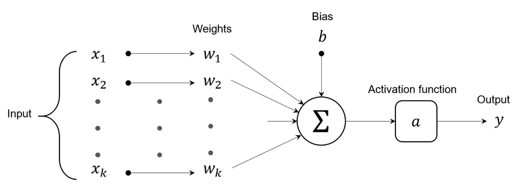
Multiple Inputs: Represents input values for various input features.
Input Weights: Multiple weights which are multiplied by their respective input feature in order to increase or decrease the significance of an input in the result of the summation in the neuron.
Bias Input: Takes in a bias value which is added to the summation of the multiplication of the inputs and their respective input weights in order to potentially shift the value of the summation prior to it entering the activation function.
Activation function: A function that transforms the input given to it (the summation of the inputs \(\times\) their respective weights + the bias) and turns it into an output.
Single Output: A singular output that outputs the value calculated using the activation function.
1.2.3 Using artificial neurons to construct an ANN (Artificial Neural Network)
The artificial neurons described above can be connected in multiple layers in order to create an artificial neural network (ANN). This ANN can consist of up to \(k\) layers where the input layer is the first layer (i.e. layer 1), and the output layer is the last layer (i.e. layer \(k\)) with all the layers in between being hidden layers which will be discussed more in depth in section 5.2. While hidden layers aren’t necessarily required, they are needed to classify non-linearly separable data. An example of an ANN is shown below where there are \(n\) hidden layers between the input and output layers.

1.3 Activation Functions
Activation functions are mathematical operations that are applied to single inputs and produce a single output. These are used in the neurons of ANNs, and the outputs of the functions can be used to transform the input of a neuron to have larger meaning. There are many types of activation functions, but all serve the following purposes:
Linearity and/or Non-linearity of Prediction:
When predicting an outcome or class based on the features of an item, an easy way to assist in the creation of the output is by plotting a feature on a function. We are then able to use this output to help mathematically classify the inputs.
Not all features or inputs can be plotted on a simple line with varying slope/intercepts. In many cases it may make sense to plot on a non-linear function or even a discontinuous or non-differentiable function.
Decision Thresholds:
In classification problems, activation functions help to define complex decision boundaries. In a program that is classifying data points that are not linearly separable, a non-linear curve may help separate points better. The non-linearity can be used to emphasize much smaller differences into much larger divided descriptions.
Why activation functions matter for learning
Training neural networks relies on gradient-based optimization. Activation functions must be differentiable (or almost everywhere differentiable) so gradients can be propagated backward through layers during backpropagation. Nonlinear activations are essential — without them, multiple layers collapse into a single linear model.
1.3.1 Sigmoid
\[\sigma(x) = \frac{1}{1 + e^{-x}}\]
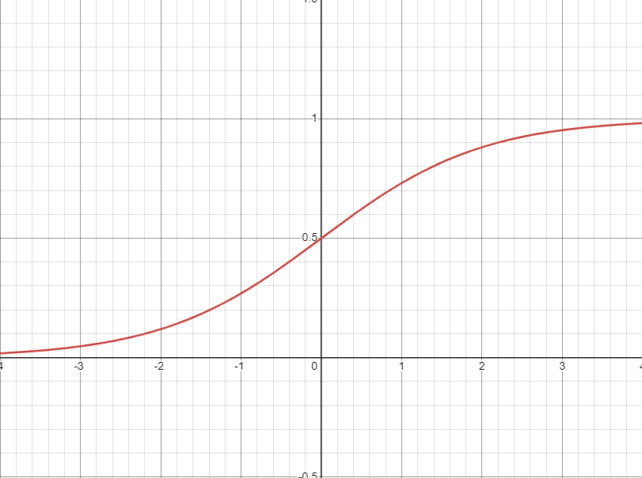
Characteristics of the function:
Output Range: (0,1)
Curve is S-shaped, and outputs between (0,1), which is helpful for predicting probabilities.
1.3.2 Tanh (Hyperbolic Tangent)
\[\tanh(x) = \frac{e^x - e^{-x}}{e^x + e^{-x}}\]

Characteristics of the function:
Output Range: (-1,1)
Zero-centered, which can help with many things, especially during the learning process.
Functionally similar to the Sigmoid function, however instead of strictly positive, it is between (-1, 1).
1.3.3 ReLU (Rectified Linear Unit)
\[f(x) = \max(0,x)\]
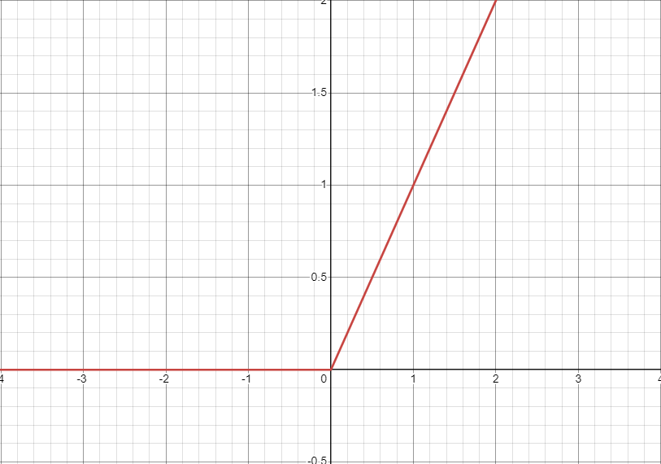
Characteristics of the function:
Range: [0, \(\infty\))
Extremely computationally simple, but can hinder algorithms when stuck outputting zero.
1.3.4 Leaky ReLU
\[f(x) = \max(.1x, x)\]

Characteristics of the function:
Range: (-\(\infty\), \(\infty\))
Just as computationally simple as the normal ReLU, but avoids the issue of getting stuck outputting zero.
1.3.5 Maxout
\[f(x) = \max(w_1^T x + b_1, w_2^T x + b_2)\]
Characteristics of the function:
Dependent on \(w_1, w_2...w_n\)\(b_1, b_2...b_n\)
Able to combine many different linear functions into one overall function.
1.3.6 SoftPlus
\[f(x) = \ln(1 + e^x)\]

Characteristics of the function:
Range: (0, \(\infty\))
Similar to leaky ReLU, however it is differentiable throughout the entire curve.
1.3.7 Activation Function - Comparisons
All of the above activation functions vary both graphically as well as when they are generally used. The Sigmoid and Tanh functions both have smooth curves, and have a clamped range. The ReLU and Leaky ReLU functions provide easily computed outputs, with the Leaky ReLU having a different behavior with negative X-inputs. Maxout in some instances can be treated the same as either ReLU or Leaky ReLU, dependent on the \(w_n\) inputs. The SoftPlus function is very similar to ReLU, however it is differentiable throughout the entire curve, with the main function being non-linear similar to the Sigmoid and TanH functions.
1.3.8 SLP usage of activation function
Single layer perceptrons use the activation function to determine the output of a single-layer perceptron which is covered in more depth in Section 4.1. The activation function takes as input the summation of the input vector multiplied with its corresponding weights and lastly added with the bias. After running the activation function with the given input, the function will in turn drive the output of the perceptron. The simplest version of perceptrons uses linear activation such that the outputs are binary, for example \(y \in \{-1, 1\}\), though this would only work when classifying linearly separable data. In order to classify non-linearly separable data multi-layer ANNs would be needed (covered in Section [mlp-section]).
1.4 Perceptron Network
1.4.1 The Single-layer Perceptron
The single layer perceptron works as briefly outlined above. To begin, the perceptron takes 3 inputs: the input vector, the inputs corresponding weights, and a bias. The input vector can be defined as input vector \(x_i=[x_{i0},...,x_{iP}]\). The corresponding weights are then given in a vector which we will define as the vector \(w_1^{(1)}=[w_{11}^{(1)},...,w_{1P}^{(1)}]\). Lastly the bias is given as a vector which we will define as \(b_1^{(1)}\). Taking these 3 inputs, the perceptron will perform the function \(h_{i1}^{(1)}\) as defined below where the values of the input vector are multiplied by their corresponding weights, then summed, and lastly added with the bias. \[h_{i1}^{(1)} = (w_1^{(1)})^{T}x_i + b_1^{(1)}\] Following the calculation of the weighted input to the neuron, the output of the function \(h_{i1}^{(1)}\) will be used as the input to the activation function of the perceptron. The output of the perceptron will in turn be driven by the result of this activation function. For example, if we define the output as \(y_{i1}^{(1)}\) and we choose to have a sigmoid activation function as defined in section 3.1, then \(y_{i1}^{(1)}=\sigma(h_{i1}^{(1)})\). Thus the output of the perceptron given in terms of its inputs in this example can be given as \(y_{i1}^{(1)}=\sigma((w_1^{(1)})^{T}x_i + b_1^{(1)})\).

1.4.2 Linear Separability
Linear separability is when there are given classes that have N quantifiable features, that using these features, there is a way to visibly separate the classes into 2 (or more) groups using an N-dimensional line or plane. If the classes can be separated, but using a non-linear function, that means they are separable but non-linearly. An example of 2-D linear separability is below:
This graph shows 2 classes, “Red" and “Blue". Both classes share the same features, those being quantitatively displayed on the x and y-axis. A dividing line is shown in the middle, with the best-case estimation on how the classes can be separated.
Note that this is still possible using more than 2 dimensions, where in 3-D the separation would be by using a plane, and so on.
The “best" linear separation function is the one that leaves the most space between the two closest objects of any class. This is because it is best to avoid placing the separation line very close to any object, as we are unsure of the classifications of objects in between the set boundaries. All else equal, a separator with a larger margin is more robust; if the classes are very close, small noise can flip labels and performance degrades.
 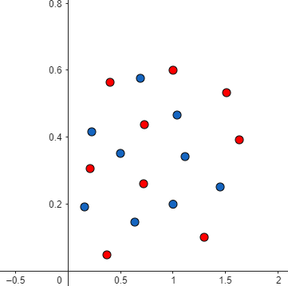
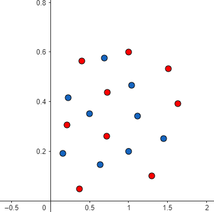
Above are 2 graphs, showing 2 classes “Red" and “Blue". Figure 5.2 (left) shows a graph that the Red/Blue points can be separated quantitatively, but not linearly. This requires a function such as a circle or an oval. Figure 5.2 (right) shows a graph that the Red/Blue points cannot be separated at all.
1.4.3 The SLP Perceptron Learning Algorithm
Single-layer perceptrons (SLPs) learn a linear decision boundary. There are multiple common training rules for an SLP. The classic perceptron algorithm uses a hard threshold/sign activation and a mistake-driven update. In this section we present a simple supervised error-based update rule (often called a delta-style rule) and later illustrate it using a sigmoid output for smoother predictions.
Weight Initialization
To begin training, all weights in the weight vector \(w\) which includes values in the range \([w_1,w_P]\) are set to random values to begin training as the significance of each input is not yet known and therefore can’t be reflected accurately in the weight vector yet.
Neuron Activation
Neuron activation consists of the calculation of the neuron’s output. This includes both the summation of inputs in the form \(h=w^Tx+b\) and the subsequent activation function which uses the result of \(h\) as its input.
Weight Update
In this step the weights are updated using the learning rule which is defined below: \[w^{(t+1)} = w^{(t)} + \alpha\, x^{(t)}\, e^{(t)}, \qquad e^{(t)} = y^{(t)} - \hat{y}^{(t)}, \quad \hat{y}^{(t)} = \sigma(w^{(t)\top}x^{(t)} + b^{(t)}).\] where \(\hat{y}^t\) is the neuron output (e.g., \(\hat{y}^t=\sigma(w^{t\top}x^t+b^t)\)) and \(e^t = y^t-\hat{y}^t\). In this equation \(\alpha\) represents the \(learning\) \(rate\) which is constant between 0 and 1 and \(e\) is the difference between the calculated output from step 2 and the desired output. The necessity of the desired output for this step is what makes the SLP perceptron learning algorithm a supervised learning algorithm.
Iteration
In the iteration stage the next training sample is added as the input and the algorithm goes back to iterating between steps 2 and 3 until the learning algorithm converges.
Important insight: A single-layer perceptron can only learn linearly separable problems. Any dataset requiring a curved boundary (like XOR) cannot be solved regardless of training time. This limitation is architectural, not algorithmic.
1.4.4 Example: Training a single-layer neuron on the AND gate (sigmoid output)
We will demonstrate the SLP perceptron algorithm using a simple dataset that represents the AND gate in \(\mathbb{R}^2\). The AND gate has the following truth table:
| \(x_1\) | \(x_2\) | AND (\(y\)) |
|---|---|---|
| 0 | 0 | 0 |
| 0 | 1 | 0 |
| 1 | 0 | 0 |
| 1 | 1 | 1 |
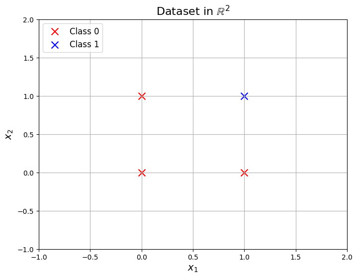
Let’s define the notation and hyperparameters we will use:
Input vector \(x_i = [x_{i1}, x_{i2}]^T\)
For simplicity, we will put the bias into the weight vector to form a single “parameter" vector: \(w^{(t)} = [w_1^{(t)}, w_2^{(t)}, b^{(t)}]^T\). With this, the activation calculation can be thought of as \(y_i=\sigma(w^{(t)T}[x_{i1},x_{i2},1])\).
Learning rate \(\alpha = 0.2\)
Activation function is the sigmoid \(\sigma(z) = \frac{1}{1 + e^{-z}}\)
Now we execute the SLP algorithm:
Weight Initialization: we randomly initialize the weights and bias. \[w^{(0)} = \begin{bmatrix} 0.892 \\ 0.626 \\ -0.396 \end{bmatrix}\]

Iteration 1
Neuron activation: We first consider \(x_1=[0,0]\) with \(y_1=0\). The predicted \(y_1\) value is: \[\hat{y}_1=\sigma([0.892,0.626,-0.396] \cdot [0,0,1])=\sigma(-0.396)\approx 0.402\]
Weight update: First, the error is \(y_1-\hat{y}_1=-0.402\). Then the weight update is: \[w^{(t+1)}= \begin{bmatrix} 0.892 \\ 0.626 \\ -0.396 \end{bmatrix} + 0.2 \cdot (-0.402) \cdot \begin{bmatrix} 0 \\ 0 \\ 1 \end{bmatrix} = \begin{bmatrix} 0.892 \\ 0.626 \\ -0.476 \end{bmatrix}\]
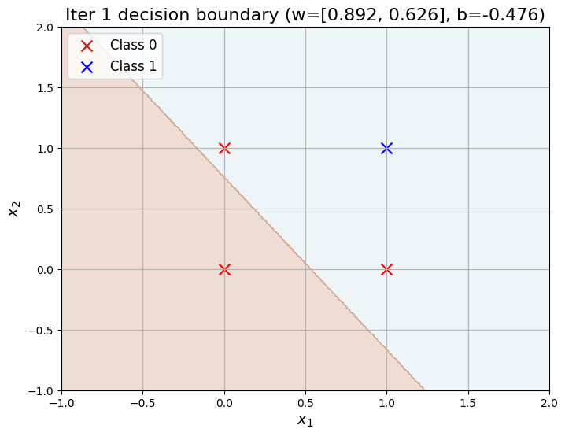
Iteration 2
Neuron activation: Next, consider \(x_2=[0,1]\) with \(y_2=0\). The predicted \(y_2\) value is: \[\hat{y}_2=\sigma([0.892,0.626,-0.476] \cdot [0,1,1])=\sigma(0.15)\approx 0.537\]
Weight update: First, the error is \(y_2-\hat{y}_2=-0.537\). Then the weight update is: \[w^{(t+1)}= \begin{bmatrix} 0.892 \\ 0.626 \\ -0.476 \end{bmatrix} + 0.2 \cdot (-0.537) \cdot \begin{bmatrix} 0 \\ 1 \\ 1 \end{bmatrix} = \begin{bmatrix} 0.892 \\ 0.518 \\ -0.584 \end{bmatrix}\]

Iteration 3
Neuron activation: Next, consider \(x_3=[1,0]\) with \(y_3=0\). The predicted \(y_3\) value is: \[\hat{y}_3=\sigma([0.892,0.518,-0.584] \cdot [1,0,1])=\sigma(0.308)\approx 0.576\]
Weight update: First, the error is \(y_3-\hat{y}_3=-0.576\). Then the weight update is: \[w^{(t+1)}= \begin{bmatrix} 0.892 \\ 0.518 \\ -0.584 \end{bmatrix} + 0.2 \cdot (-0.576) \cdot \begin{bmatrix} 1 \\ 0 \\ 1 \end{bmatrix} = \begin{bmatrix} 0.777 \\ 0.518 \\ -0.699 \end{bmatrix}\]
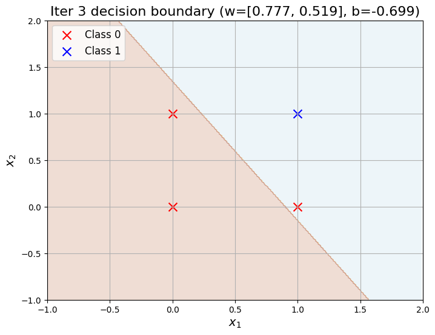
This will continue for a few iterations:
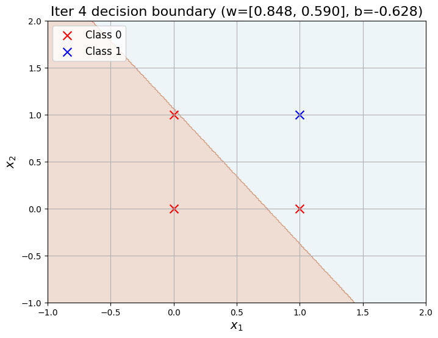


At this point, the decision boundary separates the training data well, so the learning dynamics appear to have converged in the practical sense that the parameter updates become small and predictions stabilize. Note: the classic perceptron convergence theorem (finite-time convergence on linearly separable data) applies to the perceptron with a hard threshold/sign activation and its standard mistake-driven update. In this example we used a sigmoid output for illustration, so the classic finite-time convergence guarantee does not directly apply; instead, we typically use a stopping rule such as a maximum number of iterations, small change in loss, or small change in parameters.
1.5 Multi-Layer ANN
[mlp-section] A multi-layer ANN (or multi-layer perceptron, MLP) is a neural network architecture that is composed of multiple layers of neurons which each performs a computation and then passes the result to the subsequent layer in the network. Multi-layer ANNs can contain hidden layers as described more in depth in section 5.2 and can be used to classify non-linearly separable data which is not possible without multiple layers as shown in section 5.1 and 5.3.
1.5.1 The XOR problem
The XOR problem is a classic problem in ANN research which represents the problem that occurs when trying to classify the result of an XOR (exclusive or) gate given two binary inputs. Given the graph and the truth table shown below, it can clearly be seen that there is no way to draw a straight line to separate the results.
| \(A\) | \(B\) | \(A \oplus B\) |
|---|---|---|
| 0 | 0 | 0 |
| 0 | 1 | 1 |
| 1 | 0 | 1 |
| 1 | 1 | 0 |
As can be seen above, the results of the XOR gates are not linearly separable using a single neuron (i.e. the results can’t be separated using a line hyperplane). In order to resolve this issue, a decision plane must be added in the form of a hidden layer or multiple hidden layers (Multi-layer Perceptron(s)) as described in the following section.
1.5.3 Solving XOR problem with hidden layers
The XOR problem can be solved using an ANN, as it is unable to be solved using a singular linear separating line. Given the figures above of the graph and table for the XOR problem, we can create an ANN like below:

The nodes \(x_1\) and \(x_2\) are the inputs to the XOR gate. The nodes \(h_1\) and \(h_2\) are the hidden layer nodes used to compute. The values \(b_1\) and \(b_2\) are the bias values for the individual nodes. Lastly, the y node is the final output to classify the outcome of the XOR problem.
We can characterize this network using pre-activations (linear parts) and activations (after applying the sigmoid). Let \[h_1 = 20x_1 + 20x_2 - 10,\qquad a_1 = \sigma(h_1),\] \[h_2 = -20x_1 - 20x_2 + 30,\qquad a_2 = \sigma(h_2).\] Then the output neuron computes a pre-activation \[h_{\text{out}} = 20a_1 + 20a_2 - 30,\] and applies a sigmoid to produce the final output \[\hat{y} = \sigma(h_{\text{out}}).\] To obtain a binary classification, we threshold the sigmoid outputs at \(0.5\): we predict class \(1\) if \(\hat{y}\ge 0.5\) and class \(0\) otherwise. (Equivalently, since \(\sigma(\cdot)\) is monotone, \(\hat{y}\ge 0.5\) is the same as \(h_{\text{out}} \ge 0\).) With these equations, we can check the four XOR inputs. Because the sigmoid becomes very steep for these large weights, we can treat \(\sigma(z)\) as \(\approx 1\) when \(z\) is large and positive, and \(\approx 0\) when \(z\) is large and negative.
\[\begin{array}{c|c|c|c|c} (x_1,x_2) & h_1 & a_1=\sigma(h_1) & a_2=\sigma(h_2) & h_{\text{out}}=20a_1+20a_2-30 \\ \hline (0,0) & -10 & \approx 0 & \approx 1 & 20(0)+20(1)-30=-10\;\Rightarrow\;\hat{y}\approx 0 \\ (1,0) & 10 & \approx 1 & \approx 1 & 20(1)+20(1)-30=10\;\Rightarrow\;\hat{y}\approx 1 \\ (0,1) & 10 & \approx 1 & \approx 1 & 20(1)+20(1)-30=10\;\Rightarrow\;\hat{y}\approx 1 \\ (1,1) & 30 & \approx 1 & \approx 0 & 20(1)+20(0)-30=-10\;\Rightarrow\;\hat{y}\approx 0 \\ \end{array}\] We omit listing \(h_2\) explicitly since only \(a_2 = \sigma(h_2)\) is needed. Intuitively, the two hidden units create two linear separators, and the output unit combines them so that points on the two “off-diagonal” corners \((1,0)\) and \((0,1)\) yield a positive \(h_{\text{out}}\), while \((0,0)\) and \((1,1)\) yield a negative \(h_{\text{out}}\). This is how a network with a hidden layer can represent a non-linearly separable pattern like XOR. While the weights above are proven to work for this XOR problem, there are an infinite number of weights and biases that would work for this problem. These functions can be displayed linearly like below:

This shows how an ANN can be used to model a group of classes that are not able to be separated using a single line. In this case, 2 lines must be used with defined positive/negative sides, with a function (\( y_{out}\)) that culminates the outputs of both lines.
Geometric interpretation of the XOR solution
Each hidden neuron defines a linear boundary in the input space. Together, hidden neurons partition the space into regions. The output neuron then assigns labels to these regions, effectively creating a nonlinear decision boundary. This shows how hidden layers enable piecewise-linear or curved decision surfaces.
1.6 Additional Details
1.6.1 Representational Power of Neural Networks
Ultimately, neural networks are just function models with a specific structure (the composition of units in a graph). There really isn’t anything special, at least at first glance, about this choice of structure. There is the similarity with biological neural networks, but this only serves as a source of motivation, and even then it’s not the best model for biological networks (c.f. Spiking Neural Networks). Nonetheless, neural networks have proven to be extremely versatile and standard for a wide range of machine learning tasks.
While representational capacity is well understood in many settings, explaining optimization and generalization in modern overparameterized networks remains an active research area. Here, by representation we mean a neural network’s ability to approximate a function (e.g., one that maps inputs to outputs or models a data distribution). Several classic results motivated early study of neural networks, e.g.
The first question that might arise is: what kinds of functions can we even represent using a neural network? It turns out that a neural network with one hidden layer and sigmoid activation can approximate any continuous function on a compact domain (or bounded closed set) to arbitrary precision [Universal Approximation Theorem, Cybenko 1989]. Similar results exist for other activation functions, e.g. any “squashing function" [Hornick et al., 1989], ReLU [Leshno et al. 1993][Hanin, 2019] , etc.
While incorporating a single hidden layer is sufficient for representing any function, the number of hidden units in that layer (i.e. the width of the network), may be unreasonably large (e.g. for binary functions, it will be exponential in the inputs). This forms the motivation for deep neural networks: in many cases increasing the number of hidden layers (the depth of the network) can mitigate the need for an unreasonably large width. For instance, in the case of ReLU networks, a deep network can represent functions that would otherwise require an exponential number of hidden units with a single-hidden-layer (aka shallow) network [Montúfar et al., 2014].
1.6.2 Backpropagation
We saw how MLPs are more representative and capable than SLPs. But how do we train an MLP? We’ve covered a standard training algorithm for SLPs, but things get trickier once we add layers. In the early days of MLP research, training was done by handcrafting weights (similar to the XOR problem above) or using heuristic methods, but these approaches were time-consuming and often resulted in suboptimal models.
A standard and theoretically supported method is gradient descent, which involves iteratively updating the weights by their gradients to minimize the cost function. There are other optimization algorithms that rely on higher-order derivatives, e.g. Newton’s method, but first-order gradient descent has dominated deep learning.
The general paradigm is to propagate signals through the network to generate an output (forward propagation) and then update the weights based on the gradient of the loss function. Hence the problem becomes how best to calculate the gradient of the loss function with respect to the weights. Given the ground truth label, we can easily compute the error at the end of the network once we generate an output. The idea is then to leverage the chain rule to propagate the error backwards, a process called backward propagation or simply backpropagation. Backpropagation has proven to be an effective and efficient method for computing gradients and executing gradient descent.
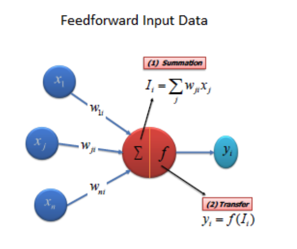

Mini Example: Why sigmoid gradients can vanish
For large positive or negative inputs, sigmoid saturates: \[\sigma(10) \approx 0.99995, \quad \sigma(-10) \approx 0.00005.\] Its derivative \[\sigma'(x) = \sigma(x)(1-\sigma(x))\] becomes extremely small in these regions. This means gradients flowing backward through many sigmoid layers shrink rapidly, making training deep networks difficult (the vanishing gradient problem). This is one motivation for ReLU-type activations.
1.7 Q&A Section
Question:You are solving a binary classification task in which you design an ANN with a single output neuron in order to solve. Let the output of this neuron be \(z\). The final output of your network, \(y'\) is given by: \(y'=\sigma(ReLU(z))\). You classify all inputs with a final value \(y' \geq 0.5\) as a part of \(class\) \(A\) and all values with a final value of \(y' < 0.5\) as a part of \(class\) \(B\). What problem are you going to encounter in this instance? Solution:The issue in this instance is that everything would always be classified as a member of \(class\) \(A\). This is because using \(ReLU\) will always output a result in the range of \([0,\infty]\). Since any input value greater than or equal to \(0\) will always cause the sigmoid function to output a value greater than or equal to \(0.5\), this means that \(\sigma(ReLU(z))\geq0.5\) regardless of the value of \(z\). Therefore, this will always result in everything being classified as a member of \(class\) \(A\) which is a problem.
Question:An artificial neural network is designed with \(k\) inputs, and is wanting to make a boolean function to determine its class. In the worst case, how many hidden units might be required to solve for its class? Solution:In the worst case, exactly representing an arbitrary Boolean function with a single-hidden-layer network may require an exponential number of hidden units in \(k\) (e.g., \(\Theta(2^k)\) in the worst case).
Question: How many tunable parameters are there in this Neural Network?
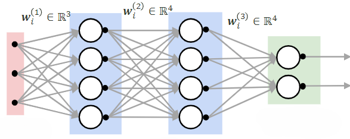
Solution: Assuming the network is fully connected between consecutive layers and each non-input neuron has a bias: \[\#\text{weights} = 3\cdot 4 + 4\cdot 4 + 4\cdot 2 = 36,\qquad \#\text{biases} = 4+4+2 = 10.\] Thus the total number of tunable parameters is \(36+10=46\).
Question:You train a network on 20 samples trying to solve a classification task. Training converges and you see that the training loss is very high. You then decide to train this network on 10,000 more examples. Is your approach to fixing the problem correct? Solution: Probably not. If the training loss is high even after training has converged, the model is underfitting (high bias) or optimization is failing. Adding more data typically helps with variance/generalization, but it usually does not reduce training loss by itself. Better fixes include increasing model capacity (more hidden units/layers), improving optimization (learning rate/optimizer), feature scaling, and checking data/labels.
Question:What is the derivative of the Sigmoid function? Solution:\( \sigma^{'}(x) = \frac{\delta}{\delta x} (1+ e^{-x})^{-1} = -(1+e^{-x})^{-2} (-e^{-x}) = \frac{1}{1+e^{-x}} \frac{e^{-x}}{1+e^{-x}} = \sigma(x) (1 - \sigma(x)) \) This is an interesting characteristic of the Sigmoid function, that the derivative is simply 1 minus itself, times itself!
Question (Applied): You train a deep neural network and notice training accuracy is stuck near random chance. List two possible causes related to activation functions.
Solution: Possible causes include vanishing gradients (e.g., sigmoid/tanh saturation), dead ReLU neurons, poor weight initialization, or learning rate issues.
Question (Computational): A fully connected layer maps 20 inputs to 15 hidden units. How many parameters does this layer have?
Solution: Weights: \(20 \times 15 = 300\), Biases: \(15\), Total = 315 parameters.